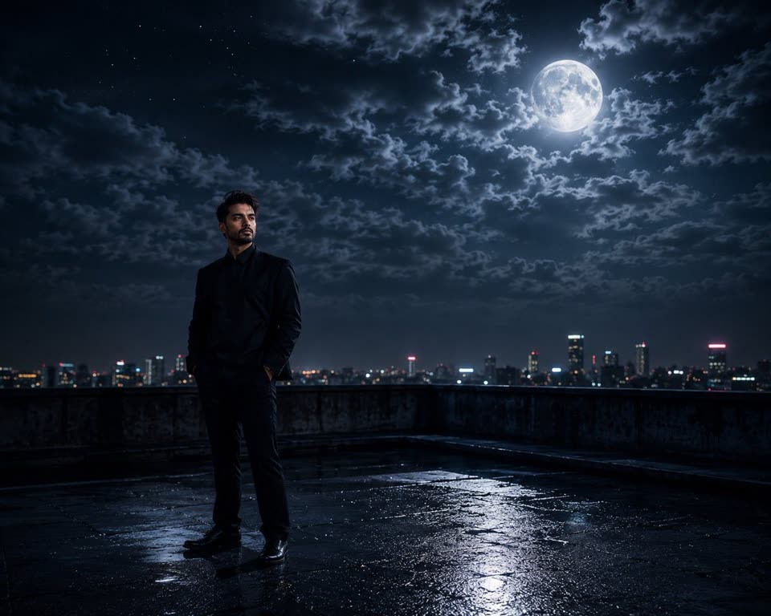

Cinematic Moonlight Rooftop Portrait Collage
MOO-005MoodNano Banana Proby ProfessorMay 14, 20

A sophisticated multi-frame prompt that creates an emotional, film-like collage of a person on an urban rooftop under a massive full moon, focusing on mood and atmospheric textures.
Prompt
Use the uploaded face reference image as the exact identity reference. Maintain perfect facial consistency across all frames — same facial structure, skin tone, hairstyle, eye shape, beard texture, nose, lips, and realistic proportions. Do not change identity. Create an ultra-cinematic multi-frame night photography collage of a {argument name="subject" default="young man"} standing on a {argument name="location" default="rooftop"} under a {argument name="celestial body" default="massive glowing full moon"}. Mood should feel emotional, dreamy, introspective, and film-like. Composition Layout (6-frame cinematic grid): 1.Wide rooftop shot with giant moon dominating the cloudy night sky. 2.Side profile portrait looking upward toward the moon. 3.Extreme close-up of eye reflecting moonlight and clouds. 4.Cinematic silhouette frame from behind with skyline lights. 5.Hand close-up resting on rooftop railing with shallow depth of field. 6.Atmospheric sky frame filled with stars, clouds, moon glow, and haze. Environment: Urban rooftop at night, Distant city skyline with realistic bokeh lights, Dramatic clouds surrounding bright moon, Slight wind movement in clothes and hair, Moist rooftop texture with reflective highlights, Atmospheric fog and cinematic haze. Lighting: Soft blue moonlight as key light, Subtle warm city lights from below, Realistic night shadows, Volumetric moon glow, Rim lighting around silhouette, High dynamic range cinematic contrast. Camera & Photography Style: Shot on Sony A7R IV / ARRI Alexa style, 85mm portrait lens + 35mm cinematic wide lens, Ultra photorealistic, Natural skin texture, Shallow depth of field, Sharp eye detail, Film grain, HDR night photography, Moody color grading, Premium cinematic composition, Hyper detailed, Unreal Engine realism, Netflix-style visual atmosphere. Color Palette: Deep midnight blue, silver moonlight, soft black shadows, cool cyan tones, warm golden city bokeh highlights. Quality Tags: masterpiece, best quality, ultra detailed, 8k, photorealistic, cinematic lighting, volumetric fog, realistic skin texture, atmospheric perspective, dramatic composition, high contrast, emotional storytelling, movie still aesthetic, premium cinematic collage, highly detailed clouds, realistic reflections. Negative Prompt: low quality, blurry face, bad anatomy, distorted eyes, extra fingers, oversaturated colors, cartoon, CGI look, duplicate frames, low detail skin, noisy image, warped hands, fake lighting, washed colors, deformed face, unrealistic moon proportions, text, watermark, logo, cropped faceTags: close-up, 35mm film, portrait, reference image